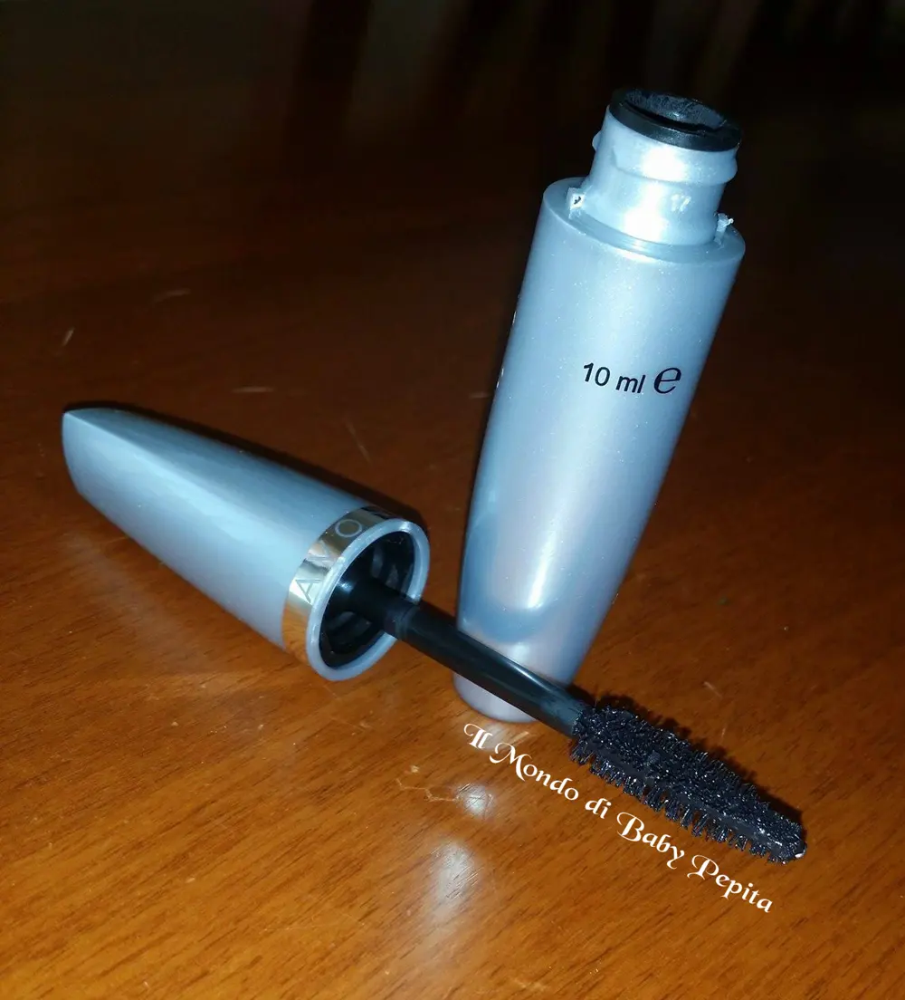
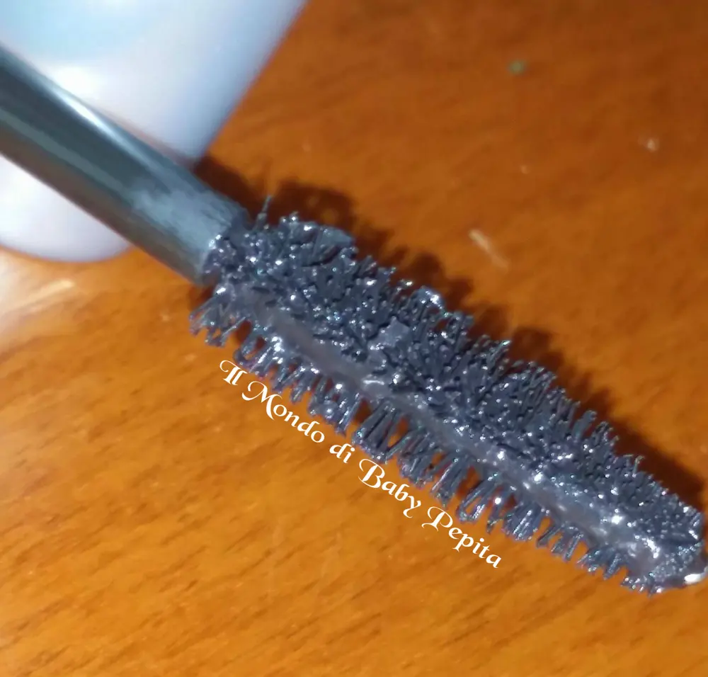
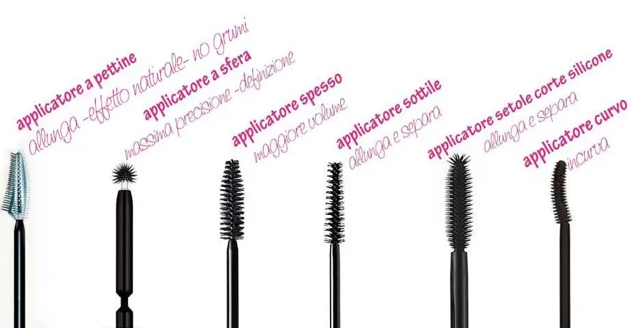
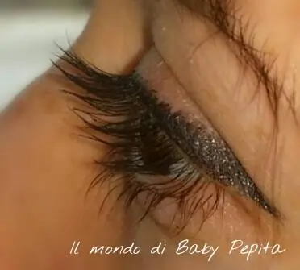
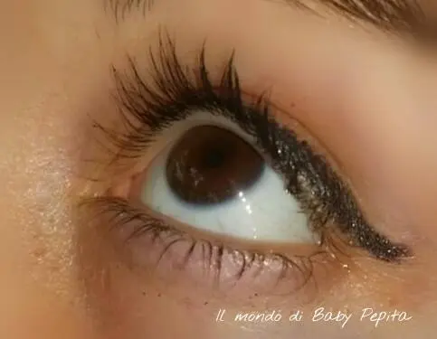
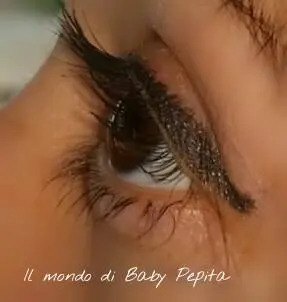
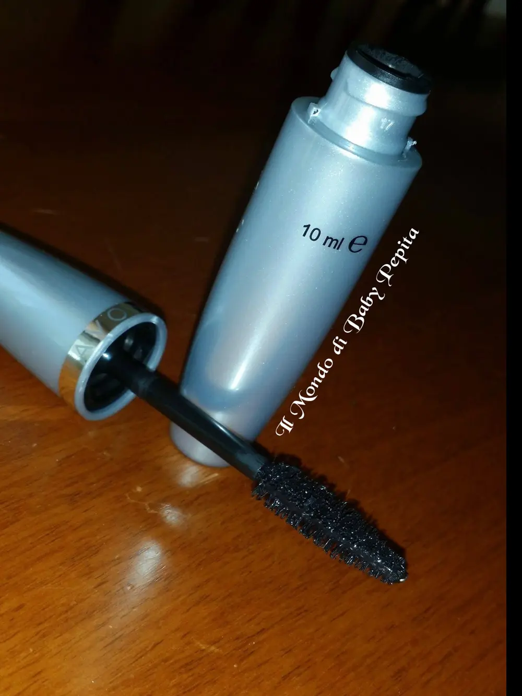

Mascara Big & Multiplied - AVON
Avete per caso già visto la pubblicità in tv dell'Avon?
La nuova uscita in casa Avon è questo mascara volumizzante . .

Chi acquista questo brand sa che la linea di Big & .. è composto da Big & Daring e Big & False Lash. . ovvero:- Il Big & Daring è per lo più un volumizzante di lunga tenuta (disponibile in Black - Blacket black - Brown black cioè nero chiaro - nero nero e marrone) .
- Il Big & False Lash è anch'esso un volumizzante ma dona alle ciglia un effetto di ciglia finta (disponibile in Black - Blacket black - Brown black - Navy . .cioè nero chiaro - nero nero - marrone e Blu).
Infatti la cosa bella di questo è che c'è un colore nuovo nei mascara di Avon, il blu, ovvero che non viene usato tanto nelle varietà dei colori.
Questo nuovo, invece, è, come la famiglia dei Big & .., un volumizzante ma la particolarità è che separa le ciglia e dando l'impressione dunque di moltiplicarle.
Disponibile in
- Black
- Brown black
Quindi di base sono tutti e 3 volumizzanti ma con differenti caratteristiche.Io l'ho acquistato in tonalità Black perchè mi piace che le ciglia siano nere nere così da arricchire anche i makeup che faccio.

Passiamo alla packaging:
Sappiamo che il packaging influisce tantissimo nell'acquisto e questo pack mi ha colpito molto per la sua forma "grossa", il tubetto è semplice, elegante ed essenziale, ma è cicciottello, ed è bello così perchè molte volte vedere un mascara dalla forma cicciottella da l'idea di volume. . ed è stato così anche per Big & Multiplied!

Lo SCOVOLINO:Si sa l'importanza che noi donne diamo ad uno scovolino in un mascara poichè ogni scovolino serve a dare effetti diversi alle nostre ciglia.
Questo che abbiamo qui è un volumizzante appunto ma non curvato, come si sarebbe aspettato visto uno degli altri due.
E' però bello ricco di setole di setole sia corte che lunghe, dando cosí modo di raggiungere facilmente anche le ciglia piú piccole e “nascoste”.Per dare maggiore volume questo scovolino, e quindi questo mascara è proprio quello che per voi.

(vi lascio la foto dei vari scovolini per darvi maggiore idea a cosa servono ogni tipologia)Adoro l'effetto ventaglio che riesce a dare allungando le ciglia con un volume extra.

L'unica pecca che riesco a trovare in questo prodotto è il fatto che dopo un tot di ore sgretola un pochetto facendo cadere dei piccolissimi pezzettini di prodotto, dei piccoli grumi, come qui in foto.

LA DURATA:Posso però confermare che ha un'ottima durata.
Leggero e non appesantisce le ciglia lasciandole morbide e non facendo l'effetto ciglia indurite.

Già dalla prima applicazione noterete la differenza . . Facendone due passate avrete un vero e proprio piccolo ventaglio al posto delle ciglia ahahah

Continuerò naturalmente a testarlo ancora per avere maggior visione ma per il momento il mascara “Big & Multiplied” di Avon è promosso a pieni voti!
Prezzo: 5,95 €